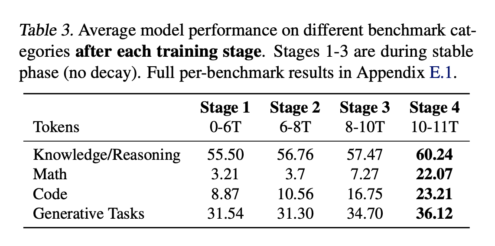
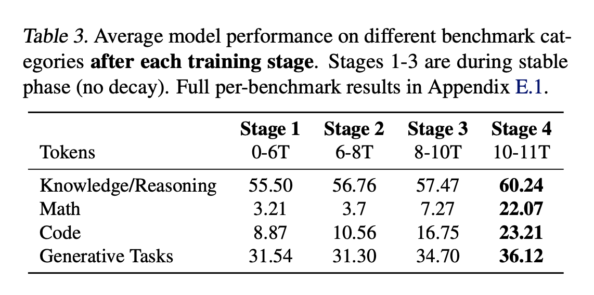

Paper Summaries
21 Jan 2025 - cohlem
Papers that I’ve read with their respective notes.
LLaMA: Open and Efficient Foundation Language Models
- Trained on 1.4T tokens.
- Wikipedia and Books domain trained for 2 epochs (maybe because its cleaner, smaller, offers coherent long sequences)
- use manual backprop for training efficiency i.e save checkpoints of activations that take longer to compute (linear layers) and use them during backprop and generate others such as (ReLu) on the fly.
SmolLM2
- including specific data eg. math doesn’t only do well in math, but also seems to improve reasoning.
- rather than training on one specific dataset, training on mixture of datasets yields better results, for instance, 60-40 mixture of FineWeb-Edu and DCLM yielded almost similar performance to only training on FineWeb-Edu
-
decontamination of curated dataset is generally done, using some bi-gram matching using the eval dataset.
- they do a multi-stage training approach rather than fixed-data mixture.
LR decay
- Warmup Phase (Steps 0–2,000):
- Learning rate increases linearly from near 0 to 5.0×10−45.0×10−4.
- Stable Phase (Steps 2,000–N):
- Learning rate remains constant at 5.0×10−45.0×10−4.
-
Decay Phase (Last 10% of Steps):
- Learning rate decreases linearly from 5.0×10−45.0×10−4 to 0.
- had loss spikes during stage 3, which remained persistent even after rewinding the trianing, and changing the data that caused the spike. The cause of spike remains undetermined, however the eval metrics recovered in the end.
- They include high quality math data in the end, and decay the to 0
- They expand the context length from 2k to 8k before the final 75 billion tokens of training and the mixture was adjusted to include 40% long-context documents
- they curate their own instruction dataset named SmolTalk, because of low performance after training on previously available dataset i.e MagPie-Pro and OpenHermes2.5.
- Filter high conversational dataset and deduplicate using gte-large embedding models.
- in short they do a lot of decontamination (using bi-gram overlaps), deduplication, filtering,
- For smaller models during sft, they filter smoltalk dataset (e.g., function calling) and hard examples from MagPie-Ultra to better align with the models’ capacity and do DPO on UltraFeedback dataset.
 

SWEET-RL: Training Multi-Turn LLM Agents on Collaborative Reasoning Tasks
backend questions Train set : question, reference answer, 10 sample tests generate trajectories from the Train set, sample sequence is like this
question, agent’s answer, human simulator’s answer–> agent’s answer, human simulator’s answer –> end. run the final solution through their 10 sample tests–> record reward. 1 if passed all test else 0. sample 15k of these
now train advantage llm using bradley terry loss. $o_t^+$ is from those trajectories which had higher reward,

Now train the policy using DPO loss, use that 15k samples trajectories and each
for each $o_t$ sample 16 $a_t$ then rate it using advantage llm, take top50% as $a_+$ remaining as $a_-$ then calculate loss for those actions. $\log \pi (a^+|o_t)$ is the joint probability of all the tokens in $a^+$
Notably, process-only filtering consistently yields the highest accuracy, suggesting that focusing on the procedural aspects of data refinement is more important than the correctness of a training trajectory.
process filtering (filtering trajectory based on whether its action at step a is plausible or not) yields better performance.
filtering for correctness usually harms performance (filtering based on its final answer)
\[r*t = –| log p*θ(A*truth_t | <think>, A_truth*{<t})– log p*θ(ŷ_t | <think>, ŷ*{<t}) |\]veRL algorithm just to know how the variables provided in the .sh file play out in the main algorithm.
for epoch in total_epoch:
for batch in train_dataloader: # each batch size is provided by train_batch_size
generate_rollout() # if GRPO use actor.rollout.n variable
generate_old_logprobs()
generate_ref_logprobs()
calculate_advantages()
# split batch into mini_batches.
minibatch_dataloader = batch.split(ppo_mini_batch_size) # this is a dataloader with each minibatch of size ppo_mini_batch_size
for e in ppo_epoch:
for minibatch in minibatch_dataloader:
#split minibatch into microbatches if needed to train on different GPUs
micro_batches = minibatch.split(ppo_micro_batch_size_per_gpu)
gradient_accumulation = ppo_mini_batch_size // ppo_micro_batch_size_per_gpu
for data in micro_batches:
generate_logprobs()
loss = calculate_ppo_loss() / gradient_accumulation
loss.backward()
optimizer.step()
gradient_accumulation step is not used in a sense that we generally do while pretraining, it just maintains the count total number of micro batches that are processed in separate GPU, by dividing loss by gradient_accumulation we obtain loss as if the minibatch was processed directly without using any micro batch splits